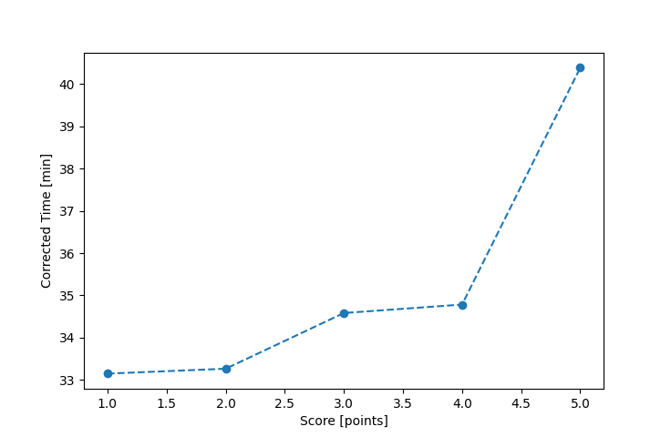

| Wind: | 2-3 (BFT) |
|---|---|
| RC: | Bill_P, Barry_O |
| Date: | June 30, 2024 |
| Notes: | M3 |
| Rank / Score | Name | Boat | Input Time [mm:ss] | Input Offset [mm:ss] | Race Time [mm:ss] | Race Time [s] | Handicap | Corrected Time [s] | Corrected Time [mm:ss] |
|---|---|---|---|---|---|---|---|---|---|
| 1.0 | Ian_O | US-1 | 35:16 | 05:00 | 30:16 | 1816 | 0.91300 | 1989 | 33:09 |
| 2.0 | Rod_H | LASEM | 37:22 | 05:00 | 32:22 | 1942 | 0.97300 | 1996 | 33:16 |
| 3.0 | Chris_E | SF | 39:43 | 05:00 | 34:43 | 2083 | 1.00400 | 2075 | 34:35 |
| 4.0 | David_Bu | SF | 39:55 | 05:00 | 34:55 | 2095 | 1.00400 | 2087 | 34:47 |
| 5.0 | Ryan_C | SF | 45:33 | 05:00 | 40:33 | 2433 | 1.00400 | 2423 | 40:23 |
| 6.0 | JoDene_C | SF | FIP_6 | -- | -- | -- | -- | -- | FIP_6 |
| 7.0 | Heather_B | SF | DNF | -- | -- | -- | -- | -- | DNF |

Application Notes:
All race results are unofficial
View source code at https://github.com/cessnao3/portsmouthracecalc/